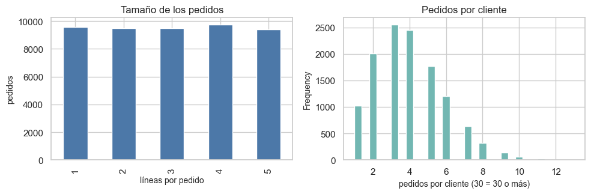
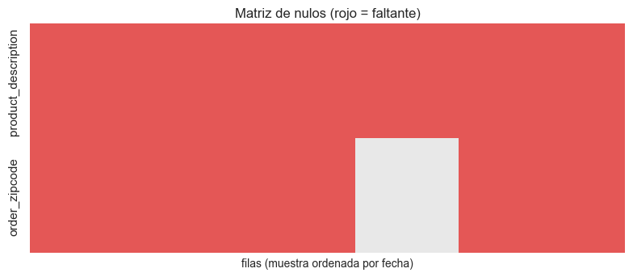

2. La base de datos: estructura, tamaño, calidad y representatividad#
Este capítulo caracteriza los datos de entrenamiento antes de analizarlos: diccionario de variables, estructura, tamaño y entidades independientes, valores faltantes (patrón y mecanismo), duplicados, valores atípicos e inconsistentes, sesgos de muestreo y ética. La prueba no se mira.
from pathlib import Path
import re, sys, warnings
import numpy as np
import pandas as pd
import matplotlib.pyplot as plt
import seaborn as sns
from IPython.display import Markdown, display
project_root = Path.cwd().resolve()
while not (project_root / "_config.yml").exists():
if project_root.parent == project_root:
raise FileNotFoundError("No se encontró _config.yml. Ejecuta el notebook dentro de la carpeta del libro.")
project_root = project_root.parent
if str(project_root) not in sys.path:
sys.path.insert(0, str(project_root))
for _folder in ("tables", "figures"): # se crean si no existen
(project_root / _folder).mkdir(exist_ok=True)
from src.project_utils import *
configure_plots()
pd.set_option("display.max_columns", 80)
pd.set_option("display.width", 170)
pd.set_option("display.max_colwidth", 70)
TABLES = project_root / "tables"
def md_out(text):
display(Markdown(text))
train = load_train()
y = train[TARGET]
Diccionario de datos#
Una fila por variable: nombre original, tipo, significado, unidad, valores, faltantes y papel en el análisis. Las variables derivadas (calendario, ítems por pedido y carga de los 7 días previos) se marcan como «(derivada)»; los componentes seno/coseno se omiten porque son transformaciones de las de calendario.
dic = build_dictionary(train)
dic.to_csv(TABLES / "diccionario_datos.csv", index=False)
dic
| variable | nombre_original | tipo | significado | unidad | valores | únicos | faltantes | faltantes_% | papel | |
|---|---|---|---|---|---|---|---|---|---|---|
| 0 | payment_type | Type | categórica nominal | Tipo de transacción o medio de pago (DEBIT, TRANSFER, CASH, PAYMENT) | no aplica | CASH, DEBIT, PAYMENT, TRANSFER | 4 | 0 | 0.0 | predictora candidata |
| 1 | days_shipping_real | Days for shipping (real) | numérica discreta | Días reales entre la compra y el envío/entrega | días | 0, 1, 2, 3, 4, 5, 6 | 7 | 0 | 0.0 | posterior al pedido; excluida (fuga) |
| 2 | days_shipping_scheduled | Days for shipment (scheduled) | numérica discreta | Días de envío programados (promesa al cliente) | días | 0, 1, 2, 4 | 4 | 0 | 0.0 | predictora candidata |
| 3 | benefit_per_order | Benefit per order | numérica continua | Ganancia por ítem de pedido | USD | rango: -1375 a 250 | 18482 | 0 | 0.0 | predictora candidata |
| 4 | sales_per_customer | Sales per customer | numérica continua | Venta total por cliente en la línea (igual a order_item_total) | USD | rango: 7.49 a 500 | 1951 | 0 | 0.0 | predictora candidata |
| ... | ... | ... | ... | ... | ... | ... | ... | ... | ... | ... |
| 57 | order_weekend | (derivada) | derivada temporal | 1 si el pedido se hizo en sábado o domingo (derivada) | no aplica | 0, 1 | 2 | 0 | 0.0 | predictora candidata |
| 58 | order_afternoon | (derivada) | derivada temporal | 1 si el pedido se hizo a partir de las 12:00 (derivada) | no aplica | 0, 1 | 2 | 0 | 0.0 | predictora candidata |
| 59 | mode_x_daypart | (derivada) | derivada categórica | Interacción modo de envío × jornada (AM/PM) del pedido (derivada) | no aplica | First Class | AM, First Class | PM, Same Day | AM, Same Day | PM, ... | 8 | 0 | 0.0 | predictora candidata |
| 60 | items_in_order | (derivada) | derivada numérica | Número de líneas del pedido (derivada, conocida al cerrar la compra) | ítems | 1, 2, 3, 4, 5 | 5 | 0 | 0.0 | predictora candidata |
| 61 | orders_prev_7d | (derivada) | derivada temporal | Pedidos registrados en los 7 días previos (derivada, carga logísti... | pedidos | rango: 0 a 426 | 427 | 0 | 0.0 | predictora candidata |
62 rows × 10 columns
Estructura de los datos#
Unidad de observación: una línea de pedido (un producto dentro de un pedido).
Nivel de agregación: transaccional (sin agregar). Las líneas se anidan en pedidos y los pedidos en clientes.
Tipo: datos transversales con marca de tiempo (eventos irregulares en el tiempo, no una serie regular) y con componente espacial (latitud/longitud). Por eso es un problema de clasificación espacio-temporal: se analizan el tiempo (cap. 7) y el espacio (cap. 8) y la partición es cronológica.
lineas_por_pedido = train.groupby(ORDER_COL).size()
pedidos_por_cliente = train.groupby(CUSTOMER_COL)[ORDER_COL].nunique()
etiqueta_unica = (train.groupby(ORDER_COL)[TARGET].nunique() == 1).mean()
predictoras = [c for c in RENAME.values() if c not in [TARGET] + LEAKAGE_COLS + ID_COLS + PII_COLS + [DATE_COL]]
n, p = len(train), len(predictoras)
tam = pd.DataFrame([
("Líneas (filas) de entrenamiento", es(n, 0)),
("Variables originales", len(RENAME)),
("Predictoras candidatas originales (sin objetivo, fuga, ids ni datos personales)", p),
("Relación n/p", es(n / p, 0)),
("Casos clase 1 (entrega tardía)", es(int(y.sum()), 0)),
("Casos clase 0 (no tardía)", es(int((1 - y).sum()), 0)),
("Pedidos distintos", es(train[ORDER_COL].nunique(), 0)),
("Clientes distintos", es(train[CUSTOMER_COL].nunique(), 0)),
("Líneas por pedido (media; máx.)", f"{es(lineas_por_pedido.mean(), 2)}; {lineas_por_pedido.max()}"),
("Pedidos por cliente (media; máx.)", f"{es(pedidos_por_cliente.mean(), 2)}; {pedidos_por_cliente.max()}"),
("Pedidos con la misma etiqueta en todas sus líneas", es(etiqueta_unica, 1, pct=True)),
("Ubicaciones (lat, lon) distintas", es(train[[LAT, LON]].drop_duplicates().shape[0], 0)),
], columns=["medida", "valor"])
tam.to_csv(TABLES / "tamano_muestra.csv", index=False)
display(tam)
fig, axes = plt.subplots(1, 2, figsize=(10, 3.4))
lineas_por_pedido.value_counts().sort_index().plot.bar(ax=axes[0], color="#4c78a8")
axes[0].set_xlabel("líneas por pedido"); axes[0].set_ylabel("pedidos"); axes[0].set_title("Tamaño de los pedidos")
pedidos_por_cliente.clip(upper=30).plot.hist(bins=30, ax=axes[1], color="#72b7b2")
axes[1].set_xlabel("pedidos por cliente (30 = 30 o más)"); axes[1].set_title("Pedidos por cliente")
plt.tight_layout(); save_figure(fig, "02_entidades.png"); plt.show()
| medida | valor | |
|---|---|---|
| 0 | Líneas (filas) de entrenamiento | 143.075 |
| 1 | Variables originales | 53 |
| 2 | Predictoras candidatas originales (sin objetivo, fuga, ids ni dato... | 32 |
| 3 | Relación n/p | 4.471 |
| 4 | Casos clase 1 (entrega tardía) | 78.549 |
| 5 | Casos clase 0 (no tardía) | 64.526 |
| 6 | Pedidos distintos | 47.719 |
| 7 | Clientes distintos | 12.187 |
| 8 | Líneas por pedido (media; máx.) | 3,00; 5 |
| 9 | Pedidos por cliente (media; máx.) | 3,92; 13 |
| 10 | Pedidos con la misma etiqueta en todas sus líneas | 100,0 % |
| 11 | Ubicaciones (lat, lon) distintas | 8.431 |

Interpretación. El tamaño efectivo de la muestra está entre el número de pedidos y el de líneas: todas las líneas de un pedido comparten la etiqueta (100 %), así que no aportan evidencia independiente. Por eso (i) la partición nunca separa un pedido, (ii) el bootstrap del capítulo 11 remuestrea pedidos y no filas. Los clientes repiten compras, pero sus pedidos ocurren en fechas distintas y el modelo no usa su identificador. Con n/p del orden de miles la muestra es holgada para un modelo lineal.
Valores faltantes: patrón#
Se muestra el porcentaje por columna y la matriz de nulos (muestra de 2.000 filas ordenadas en el tiempo).
miss = train[list(RENAME.values())].isna().sum().to_frame("faltantes")
miss["faltantes_%"] = 100 * miss["faltantes"] / len(train)
miss = miss[miss["faltantes"] > 0].sort_values("faltantes_%", ascending=False)
miss.to_csv(TABLES / "faltantes_por_columna.csv")
display(miss.round(2))
sample = train.iloc[np.linspace(0, len(train) - 1, 2000).astype(int)]
cols_m = list(miss.index) + ["market", "order_country"]
fig, ax = plt.subplots(figsize=(8, 3.6))
sns.heatmap(sample[list(miss.index)].isna().T, cbar=False, cmap=["#e8e8e8", "#e45756"], ax=ax, xticklabels=False)
ax.set_xlabel("filas (muestra ordenada por fecha)"); ax.set_title("Matriz de nulos (rojo = faltante)")
plt.tight_layout(); save_figure(fig, "02_faltantes.png"); plt.show()
| faltantes | faltantes_% | |
|---|---|---|
| product_description | 143075 | 100.00 |
| order_zipcode | 118235 | 82.64 |

Valores faltantes: mecanismo (MCAR, MAR o MNAR)#
MCAR: la ausencia no depende de nada; MAR: depende de variables observadas; MNAR: depende del propio valor no observado. Para cada indicador de ausencia se mide su asociación con variables observadas (V de Cramér o rank-biserial) y se compara la distribución entre filas completas e incompletas.
from scipy import stats
rows = []
for m in miss.index:
ind = train[m].isna().astype(int)
if ind.nunique() < 2:
rows.append({"variable": m, "comparada_con": "—", "efecto": np.nan, "p_valor": np.nan,
"nota": "100 % faltante: no hay variación que comparar"})
continue
for o in ["market", "order_region", "shipping_mode", "customer_segment", TARGET]:
v, chi2, pv = cramers_v(train[o], ind)
rows.append({"variable": m, "comparada_con": o, "efecto": v, "p_valor": pv, "nota": "V de Cramér"})
for o in ["sales", "order_item_quantity", "order_item_profit_ratio"]:
a, b = train.loc[ind == 1, o], train.loc[ind == 0, o]
u, pv = stats.mannwhitneyu(a, b)
rows.append({"variable": m, "comparada_con": o, "efecto": abs(2 * u / (len(a) * len(b)) - 1), "p_valor": pv,
"nota": "|rank-biserial|"})
screen = pd.DataFrame(rows)
screen["p_fdr"] = fdr_bh(screen["p_valor"])
screen.to_csv(TABLES / "asociacion_faltantes.csv", index=False)
display(screen.round(4))
zip_por_mercado = train["order_zipcode"].notna().groupby(train["market"]).mean().rename("con_zipcode_%") * 100
display(zip_por_mercado.round(2).to_frame())
| variable | comparada_con | efecto | p_valor | nota | p_fdr | |
|---|---|---|---|---|---|---|
| 0 | product_description | — | NaN | NaN | 100 % faltante: no hay variación que comparar | NaN |
| 1 | order_zipcode | market | 0.9772 | 0.0000 | V de Cramér | 0.0000 |
| 2 | order_zipcode | order_region | 0.9999 | 0.0000 | V de Cramér | 0.0000 |
| 3 | order_zipcode | shipping_mode | 0.0053 | 0.0717 | V de Cramér | 0.1583 |
| 4 | order_zipcode | customer_segment | 0.0046 | 0.0792 | V de Cramér | 0.1583 |
| 5 | order_zipcode | late_delivery_risk | 0.0000 | 0.6465 | V de Cramér | 0.6465 |
| 6 | order_zipcode | sales | 0.0026 | 0.5189 | |rank-biserial| | 0.5930 |
| 7 | order_zipcode | order_item_quantity | 0.0058 | 0.1206 | |rank-biserial| | 0.1930 |
| 8 | order_zipcode | order_item_profit_ratio | 0.0056 | 0.1638 | |rank-biserial| | 0.2184 |
| con_zipcode_% | |
|---|---|
| market | |
| Africa | 0.00 |
| Europe | 0.00 |
| LATAM | 0.00 |
| Pacific Asia | 0.00 |
| USCA | 96.28 |
Interpretación.
order_zipcodefalta en todos los pedidos fuera de USCA y casi nunca dentro de USCA (V de Cramér conmarket≈ 1). La ausencia está completamente explicada por una variable observada → mecanismo MAR estructural: el código postal solo existe para destinos de EE. UU./Canadá; no es un dato «perdido» sino «no aplica». Su asociación con el objetivo es nula, y además la información geográfica ya está enorder_country/order_region. Decisión: no se usa (capítulo 10).product_descriptionestá 100 % vacía: no tiene información. Decisión: eliminar.No se aplica la prueba de Little porque no hay variables numéricas con faltantes parciales relevantes; la comparación por grupos es evidencia suficiente.
Duplicados y casi-duplicados#
Se buscan (i) filas duplicadas exactas ignorando el identificador de línea, (ii) casi-duplicados: el mismo producto repetido en un mismo pedido, y (iii) columnas duplicadas (una copia exacta de otra).
sin_id = train[list(RENAME.values())].drop(columns=[ITEM_COL])
dup_exactos = int(sin_id.duplicated().sum())
casi = int(train.duplicated(subset=[ORDER_COL, "product_card_id"]).sum())
col_dup = []
for a, b in DUPLICATE_PAIRS:
col_dup.append({"columna": a, "copia_de": b, "coincidencia_%": 100 * float((train[a] == train[b]).mean())})
col_dup.append({"columna": "product_image", "copia_de": "product_name (1 a 1)",
"coincidencia_%": 100 * float(train.groupby("product_name")["product_image"].nunique().eq(1).mean())})
col_dup.append({"columna": "days_shipping_scheduled", "copia_de": "shipping_mode (1 a 1)",
"coincidencia_%": 100 * float(train.groupby("shipping_mode")["days_shipping_scheduled"].nunique().eq(1).mean())})
col_dup = pd.DataFrame(col_dup)
col_dup.to_csv(TABLES / "columnas_duplicadas.csv", index=False)
md_out(f"- Duplicados exactos (sin el id de línea): **{dup_exactos}**.\n"
f"- Casi-duplicados (mismo producto dos veces en un pedido): **{es(casi, 0)}** líneas. Son compras legítimas registradas en "
"líneas separadas y comparten etiqueta con su pedido, así que se conservan; el agrupamiento por pedido evita que inflen la evaluación.")
display(col_dup.round(2))
Duplicados exactos (sin el id de línea): 0.
Casi-duplicados (mismo producto dos veces en un pedido): 17.248 líneas. Son compras legítimas registradas en líneas separadas y comparten etiqueta con su pedido, así que se conservan; el agrupamiento por pedido evita que inflen la evaluación.
| columna | copia_de | coincidencia_% | |
|---|---|---|---|
| 0 | order_customer_id | customer_id | 100.0 |
| 1 | order_profit_per_order | benefit_per_order | 100.0 |
| 2 | order_item_total | sales_per_customer | 100.0 |
| 3 | order_item_product_price | product_price | 100.0 |
| 4 | product_category_id | category_id | 100.0 |
| 5 | order_item_cardprod_id | product_card_id | 100.0 |
| 6 | product_image | product_name (1 a 1) | 100.0 |
| 7 | days_shipping_scheduled | shipping_mode (1 a 1) | 100.0 |
Interpretación. Seis columnas son copias exactas de otras, product_image
equivale al nombre del producto y days_shipping_scheduled está determinada
por shipping_mode (Standard = 4, Second = 2, First = 1, Same Day = 0 días). Mantener
ambas versiones introduce multicolinealidad perfecta (capítulo 5); en cada par se
conserva una sola columna (capítulo 10).
Valores atípicos#
Regla del IQR (fuera de [Q1 − 1,5·IQR, Q3 + 1,5·IQR]) en las numéricas originales.
num_orig = ["days_shipping_real", "days_shipping_scheduled", "benefit_per_order", "sales_per_customer",
"order_item_discount", "order_item_discount_rate", "order_item_product_price", "order_item_profit_ratio",
"order_item_quantity", "sales", LAT, LON]
res_num = numeric_summary(train[num_orig])
res_num.to_csv(TABLES / "atipicos_numericas.csv")
display(res_num[["media", "mediana", "mínimo", "máximo", "asimetría", "outliers_IQR_%"]].round(3))
| media | mediana | mínimo | máximo | asimetría | outliers_IQR_% | |
|---|---|---|---|---|---|---|
| days_shipping_real | 3.499 | 3.000 | 0.000 | 6.000 | 0.082 | 0.000 |
| days_shipping_scheduled | 2.932 | 4.000 | 0.000 | 4.000 | -0.732 | 0.000 |
| benefit_per_order | 21.156 | 31.120 | -1374.860 | 249.980 | -3.532 | 10.547 |
| sales_per_customer | 177.011 | 159.990 | 7.490 | 499.950 | 0.706 | 0.714 |
| order_item_discount | 19.974 | 14.000 | 0.000 | 124.990 | 1.558 | 4.440 |
| order_item_discount_rate | 0.102 | 0.100 | 0.000 | 0.250 | 0.341 | 0.000 |
| order_item_product_price | 131.294 | 59.990 | 9.990 | 399.980 | 1.267 | 0.000 |
| order_item_profit_ratio | 0.120 | 0.270 | -2.750 | 0.500 | -2.886 | 9.633 |
| order_item_quantity | 2.204 | 1.000 | 1.000 | 5.000 | 0.782 | 0.000 |
| sales | 196.985 | 179.970 | 9.990 | 499.950 | 0.658 | 0.000 |
| latitude | 29.746 | 33.145 | -33.938 | 48.782 | -0.102 | 0.004 |
| longitude | -84.936 | -76.891 | -158.026 | 115.263 | -0.458 | 0.795 |
Interpretación. Los valores extremos de ventas y precios corresponden a
productos caros reales (por ejemplo, equipos de gimnasia o electrónica), no a
errores de captura; los de ganancia negativa son líneas vendidas con pérdida
(margen de hasta −275 %), también plausibles en una tienda con descuentos. Se
conservan y la asimetría se trata con log1p en el Pipeline (capítulo 10).
Valores imposibles o inconsistentes#
Comprobaciones de rangos, unidades, coherencia aritmética entre columnas y categorías mal escritas.
tol = 0.05
checks = [
("Latitud fuera de [-90, 90] o longitud fuera de [-180, 180]", int((~train[LAT].between(-90, 90) | ~train[LON].between(-180, 180)).sum())),
("Coordenadas (0, 0)", int(((train[LAT] == 0) & (train[LON] == 0)).sum())),
("Precio <= 0", int((train["product_price"] <= 0).sum())),
("Cantidad <= 0", int((train["order_item_quantity"] <= 0).sum())),
("Tasa de descuento fuera de [0, 1]", int((~train["order_item_discount_rate"].between(0, 1)).sum())),
("sales ≠ precio × cantidad", int(((train["sales"] - train["order_item_product_price"] * train["order_item_quantity"]).abs() > tol).sum())),
("order_item_total ≠ sales − descuento", int(((train["order_item_total"] - (train["sales"] - train["order_item_discount"])).abs() > tol).sum())),
("Fecha de despacho anterior a la del pedido", int((train["shipping_date"] < train[DATE_COL]).sum())),
("Días reales ≠ días de calendario entre pedido y despacho", int(((train["shipping_date"].dt.normalize() - train[DATE_COL].dt.normalize()).dt.days != train["days_shipping_real"]).sum())),
("Tardía según días reales > programados pero etiqueta 0", int(((train["days_shipping_real"] > train["days_shipping_scheduled"]) & (y == 0)).sum())),
("Etiqueta 1 con días reales <= programados", int(((train["days_shipping_real"] <= train["days_shipping_scheduled"]) & (y == 1)).sum())),
("product_status constante", int(train["product_status"].nunique() == 1)),
("customer_email / password enmascarados (un solo valor)", int(train["customer_email"].nunique() == 1 and train["customer_password"].nunique() == 1)),
]
checks = pd.DataFrame(checks, columns=["comprobación", "casos"])
checks.to_csv(TABLES / "valores_inconsistentes.csv", index=False)
display(checks)
inc = train[(train["days_shipping_real"] > train["days_shipping_scheduled"]) & (y == 0)]
display(pd.crosstab(inc["delivery_status"], inc["order_status"]))
md_out("Nombres en dos idiomas: `customer_country` usa «EE. UU.» y «Puerto Rico» (español), y `order_country` mezcla nombres en español "
f"({', '.join(train['order_country'].value_counts().index[:5])}). No son errores de codificación sino de convención; se tratan como categorías.")
| comprobación | casos | |
|---|---|---|
| 0 | Latitud fuera de [-90, 90] o longitud fuera de [-180, 180] | 0 |
| 1 | Coordenadas (0, 0) | 0 |
| 2 | Precio <= 0 | 0 |
| 3 | Cantidad <= 0 | 0 |
| 4 | Tasa de descuento fuera de [0, 1] | 0 |
| 5 | sales ≠ precio × cantidad | 0 |
| 6 | order_item_total ≠ sales − descuento | 0 |
| 7 | Fecha de despacho anterior a la del pedido | 0 |
| 8 | Días reales ≠ días de calendario entre pedido y despacho | 0 |
| 9 | Tardía según días reales > programados pero etiqueta 0 | 3362 |
| 10 | Etiqueta 1 con días reales <= programados | 0 |
| 11 | product_status constante | 1 |
| 12 | customer_email / password enmascarados (un solo valor) | 1 |
| order_status | CANCELED | SUSPECTED_FRAUD |
|---|---|---|
| delivery_status | ||
| Shipping canceled | 1578 | 1784 |
Nombres en dos idiomas: customer_country usa «EE. UU.» y «Puerto Rico» (español), y order_country mezcla nombres en español (Estados Unidos, México, Francia, Australia, Brasil). No son errores de codificación sino de convención; se tratan como categorías.
Interpretación.
days_shipping_realcoincide con la diferencia en días de calendario entre el pedido y el despacho (no en horas: un envío de 12 horas que cruza la medianoche cuenta 1 día).La aritmética entre precio, cantidad, venta y total es coherente y no hay coordenadas imposibles ni (0, 0).
Inconsistencia relevante: hay líneas con días reales mayores que los programados pero etiqueta 0. Todas son pedidos cancelados o sospechosos de fraude (
delivery_status = Shipping canceled): la etiqueta 0 no significa «llegó a tiempo», sino «no se entregó». Esta población se discute como riesgo de fuga en el capítulo 9.product_statuses constante ycustomer_email/customer_passwordestán enmascarados: no aportan información.
Sesgos de muestreo y representatividad#
Datos simulados de una empresa ficticia. Los autores construyeron el conjunto con fines académicos; las relaciones pueden ser más simples (o más aleatorias) que en una cadena de suministro real. Las conclusiones aplican a DataCo, no a la logística en general.
Clientes solo en EE. UU. y Puerto Rico (
customer_country), pero pedidos con destino en 164 países (order_country). La ubicación del cliente/tienda y el destino son, por tanto, dimensiones distintas; las coordenadas no describen el destino.Cambio de régimen al final del periodo (desde octubre de 2017 hay un solo producto por pedido y se reduce el catálogo; capítulo 7). Afecta a la prueba y se evalúa como deriva.
Un único canal y catálogo (artículos deportivos, ropa, electrónica): no representa otros sectores ni otros transportistas.
Consideraciones éticas#
Datos personales: nombre, apellido, dirección y código postal del cliente. Aunque la empresa sea ficticia, se tratan como si fueran reales: se excluyen del modelo, no se muestran en el libro y no se combinan entre sí.
Reidentificación: las coordenadas son una por cliente y, junto con fecha y hora exactas de cada pedido, podrían permitir reidentificar a una persona en un conjunto real. En el análisis espacial (capítulo 8) se trabaja con celdas de 1° agregadas, no con puntos individuales etiquetados.
Uso del modelo: priorizar pedidos por riesgo no debe traducirse en peor servicio para mercados o segmentos con más retrasos; el capítulo 11 revisa el desempeño por mercado y segmento.